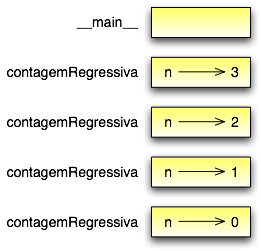

Tópicos
O operador módulo trabalha com inteiros (e expressões que têm inteiros como resultado) e produz o resto da divisão do primeiro pelo segundo. Em Python, o operador módulo é um símbolo de porcentagem (%). A sintaxe é a mesma que a de outros operadores:
>>> quociente = 7 / 3
>>> print quociente
2
>>> resto = 7 % 3
>>> print resto
1
Então, 7 dividido por 3 é 2 e o resto é 1.
O operador módulo se revela surpreendentemente útil. Por exemplo, você pode checar se um número é divisível por outro - se x % y dá zero, então x é divisível por y.
Você também pode extrair o algarismo ou algarismos mais à direita de um número. Por exemplo, x % 10 resulta o algarismo mais à direita de x (na base 10). Similarmente, x % 100 resulta nos dois dígitos mais à direita.
Uma expressão booleana é uma expressão que é verdadeira (True) ou é falsa (False). Em Python, uma expressão que é verdadeira tem o valor 1, e uma expressão que é falsa tem o valor 0.
O operador == compara dois valores e produz uma expressão booleana:
>>> 5 == 5
True
>>> 5 == 6
False
No primeiro comando, os dois operadores são iguais, então a expressão avalia como True (verdadeiro); no segundo comando, 5 não é igual a 6, então temos False (falso).
O operador == é um dos operadores de comparação; os outros são:
x != y # x é diferente de y
x > y # x é maior que y
x < y # x é menor que y
x >= y # x é maior ou igual a y
x <= y # x é menor ou igual a y
Embora esses operadores provavelmente sejam familiares a você, os símbolos em Python são diferentes dos símbolos da matemática. Um erro comum é usar um sinal de igual sozinho (=) em vez de um duplo (==). Lembre-se de que = é um operador de atribuição e == é um operador de comparação. Também não existem coisas como =< ou =>.
Existem três operadores lógicos: and, or, not (e, ou, não). A semântica (significado) destes operadores é similar aos seus significados em inglês (ou português). Por exemplo, x > 0 and x < 10 é verdadeiro somente se x for maior que 0 e menor que 10.
n%2 == 0 or n%3 == 0 é verdadeiro se qualquer das condições for verdadeira, quer dizer, se o número n for divisível por 2 ou por 3.
Finalmente, o operador lógico not nega uma expressão booleana, assim, not(x > y) é verdadeiro se (x > y) for falso, quer dizer, se x for menor ou igual a y.
A rigor, os operandos de operadores lógicos deveriam ser expressões booleanas, mas Python não é muito rigoroso. Qualquer número diferente de zero é interpretado como verdadeiro (True):
>>> x = 5
>>> x and 1
1
>>> y = 0
>>> y and 1
0
Em geral, esse tipo de coisa não é considerado de bom estilo. Se você precisa comparar um valor com zero, deve fazê-lo explicitamente.
Para poder escrever programas úteis, quase sempre precisamos da habilidade de checar condições e mudar o comportamento do programa de acordo com elas. As instruções condicionais nos dão essa habilidade. A forma mais simples é a instrução if (se):
if x > 0
print "x é positivo"
A expressão booleana depois da instrução if é chamada de condição. Se ela é verdadeira (true), então a instrução endentada é executada. Se não, nada acontece.
Assim como outras instruções compostas, a instrução if é constituída de um cabeçalho e de um bloco de instruções:
CABECALHO:
PRIMEIRO COMANDO
...
ULTIMO COMANDO
O cabeçalho começa com uma nova linha e termina com dois pontos (:). Os comandos ou instruções endentados que seguem são chamados de bloco. A primeira instrução não endentada marca o fim do bloco. Um bloco de comandos dentro de um comando composto ou instrução composta é chamado de corpo do comando.
Não existe limite para o número de instruções que podem aparecer no corpo de uma instrução if, mas tem que haver pelo menos uma. Ocasionalmente, é útil ter um corpo sem nenhuma instrução (usualmente, como um delimitador de espaço para código que você ainda não escreveu). Nesse caso, você pode usar o comando pass, que indica ao Python: “passe por aqui sem fazer nada”.
Um segundo formato da instrução if é a execução alternativa, na qual existem duas possibilidades e a condição determina qual delas será executada. A sintaxe se parece com:
if x % 2 == 0:
print x, "é par"
else:
print x, "é impar"
Se o resto da divisão de x por 2 for 0, então sabemos que x é par, e o programa exibe a mensagem para esta condição. Se a condição é falsa, o segundo grupo de instruções é executado. Desde que a condição deva ser verdadeira (True) ou falsa (False), precisamente uma das alternativas vai ser executada. As alternativas são chamadas ramos (branches), porque existem ramificações no fluxo de execução.
Por final, se você precisa checar a paridade de números com frequência, pode colocar este código dentro de uma função:
def imprimeParidade(x):
if x % 2 == 0:
print x, "é par"
else:
print x, "é impar"
Para qualquer valor de x, imprimeParidade exibe uma mensagem apropriada. Quando você a chama, pode fornecer uma expressão de resultado inteiro como um argumento:
>>> imprimeParidade(17)
>>> imprimeParidade(y+1)
Às vezes existem mais de duas possibilidades e precisamos de mais que dois ramos. Uma condicional encadeada é uma maneira de expressar uma operação dessas:
if x < y:
print x, "é menor que", y
elif x > y:
print x, "é maior que", y
else:
print x, "e", y, "são iguais"
elif é uma abreviação de “else if” (“senão se”). De novo, precisamente um ramo será executado. Não existe limite para o número de instruções elif, mas se existir uma instrução else ela tem que vir por último:
if escolha == 'A':
funcaoA()
elif escolha == 'B':
funcaoB()
elif escolha == 'C':
funcaoC()
else:
print "Escolha inválida."
Cada condição é checada na ordem. Se a primeira é falsa, a próxima é checada, e assim por diante. Se uma delas é verdadeira, o ramo correspondente é executado, e a instrução termina. Mesmo que mais de uma condição seja verdadeira, apenas o primeiro ramo verdadeiro executa.
Como exercício, coloque os exemplos acima em funções chamadas comparar(x, y) e executar(escolha).
Um condicional também pode ser aninhado dentro de outra. Poderíamos ter escrito o exemplo tricotômico (dividido em três) como segue:
if x == y:
print x, "e", y, "são iguais"
else:
if x < y:
print x, "é menor que", y
else:
print x, "é maior que", y
O condicional mais externo tem dois ramos. O primeiro ramo contém uma única instrução de saída. O segundo ramo contém outra instrução if, que por sua vez tem dois ramos. Os dois ramos são ambos instruções de saída, embora pudessem conter instruções condicionais também.
Embora a endentação das instruções torne a estrutura aparente, condicionais aninhados tornam-se difíceis de ler rapidamente. Em geral, é uma boa ideia evitar o aninhamento quando for possível.
Operadores lógicos frequentemente fornecem uma maneira de simplificar instruções condicionais aninhadas. Por exemplo, podemos reescrever o código a seguir usando uma única condicional:
if 0 < x:
if x < 10:
print "x é um número positivo de um só algarismo."
A instrução print é executada somente se a fizermos passar por ambos os condicionais, então, podemos usar um operador and:
if 0 < x and x < 10:
print "x é um número positivo de um só algarismo."
Esses tipos de condições são comuns, assim, Python provê uma sintaxe alternativa que é similar à notação matemática:
if 0 < x < 10:
print "x é um número positivo de um só algarismo."
O comando return permite terminar a execução de uma função antes que ela alcance seu fim. Uma razão para usá-lo é se você detectar uma condição de erro:
import math
def imprimeLogaritmo(x):
if x <= 0:
print "Somente números positivos, por favor."
return
resultado = math.log(x)
print "O log de x é ", resultado
A função imprimeLogaritmo recebe um parâmetro de nome x. A primeira coisa que ela faz é checar se x é menor ou igual a 0, neste caso ela exibe uma mensagem de erro e então usa return para sair da função. O fluxo de execução imediatamente retorna ao ponto chamador, quer dizer, de onde a função foi chamada, e as linhas restantes da função não são executadas.
Lembre-se que para usar uma função do módulo de matemática, math, você tem de importá-lo.
Já mencionamos que é válido uma função chamar outra função, e você viu vários exemplos disso. Mas ainda não tínhamos dito que também é válido uma função chamar a si mesma. Talvez não seja óbvio porque isso é bom, mas trata-se de uma das coisas mais mágicas e interessantes que um programa pode fazer. Por exemplo, dê uma olhada na seguinte função:
def contagemRegressiva(n):
if n == 0:
print "Fogo!"
else:
print n
contagemRegressiva(n-1)
contagemRegressiva espera que o parâmetro, n, seja um inteiro positivo. Se n for 0, ela produz como saída a palavra “Fogo!”. De outro modo, ela produz como saída n e então chama uma função de nome contagemRegressiva – ela mesma – passando n-1 como argumento.
O que acontece se chamarmos essa função da seguinte maneira:
>>> contagemRegressiva(3)
A execução de contagemRegressiva começa com n=3, e desde que n não é 0, produz como saída o valor 3, e então chama a si mesma...
A execução de contagemRegressiva começa com n=2, e desde que n não é 0, produz como saída o valor 2, e então chama a si mesma...
A execução de contagemRegressiva começa com n=1, e desde que n não é 0, produz como saída o valor 1, e então chama a si mesma...
A execução de contagemRegressiva começa com n=0, e desde que n é 0, produz como saída a palavra “Fogo!” e então retorna.
A contagemRegressiva que tem n=1 retorna.
A contagemRegressiva que tem n=2 retorna.
A contagemRegressiva que tem n=1 retorna.
E então estamos de volta em __main__ (que viagem!). Assim, a saída completa se parece com:
3
2
1
Fogo!
Como um segundo exemplo, dê uma olhada novamente nas funções novaLinha e tresLinhas:
def novaLinha():
print
def tresLinhas():
novaLinha()
novaLinha()
novaLinha()
Muito embora isso funcione, não seria muito útil se precisássemos gerar como saída 2 novas linhas, ou 106. Uma alternativa melhor seria esta:
def nLinhas(n):
if n > 0:
print
nLinhas(n-1)
Esse programa é similar a contagemRegressiva. Sempre que n for maior que 0, ele gera como saída uma nova linha e então chama a si mesmo para gerar como saída n-1 linhas adicionais. Deste modo, o número total de novas linhas é 1 + (n-1) que, se você estudou álgebra direitinho, vem a ser o próprio n.
O processo de uma função chamando a si mesma é chamado de recursividade, e tais funções são ditas recursivas.
Na Seção 3.11, usamos um diagrama de pilha para representar o estado de um programa durante uma chamada de função. O mesmo tipo de diagrama pode ajudar a interpretar uma função recursiva.
Toda vez que uma função é chamada, Python cria um novo quadro (frame) para a função, que contém as variáveis locais e parâmetros da função. Para uma função recursiva, terá que existir mais de um quadro na pilha ao mesmo tempo.
Esta figura mostra um diagrama de pilha para contagemRegressiva, chamada com n = 3:
Como de costume, no topo da pilha está o quadro para __main__. Ele está vazio porque nem criamos qualquer variável em __main__ nem passamos qualquer valor para ele.
Os quatro quadros contagemRegressiva têm valores diferentes para o parâmetro n. A parte mais em baixo na pilha, onde n=0, é chamada de caso base. Ele não faz uma chamada recursiva, então não há mais quadros.
Como exercício, desenhe um diagrama de pilha para nLinhas chamada com n=4.
Se uma recursividade nunca chega ao caso base, ela prossegue fazendo chamadas recursivas para sempre, e o programa nunca termina. Isto é conhecido como recursividade infinita, e geralmente não é considerada uma boa ideia. Aqui está um programa mínimo com uma recursividade infinita:
def recursiva():
recursiva()
Na maioria dos ambientes de programação, um programa com recursividade infinita na verdade não roda para sempre. Python reporta uma mensagem de erro quando a profundidade máxima de recursividade é alcançada:
File "<stdin>", line 2, in recursiva
(98 repetitions omitted)
File "<stdin>", line 2, in recursiva
RuntimeError: Maximum recursion depth exceeded
Este traceback é um pouco maior do que aquele que vimos no capítulo anterior. Quando o erro ocorre, existem 100 quadros recursiva na pilha!
Como exercício, escreva uma função com recursividade infinita e rode-a no interpretador Python.
Os programas que temos escrito até agora são um pouco crus, no sentido de não aceitarem dados entrados pelo usuário. Eles simplesmente fazem a mesma coisa todas as vezes.
Python fornece funções nativas que pegam entradas pelo teclado. A mais simples é chamada raw_input. Quando esta função é chamada, o programa pára e espera que o usuário digite alguma coisa. Quando o usuário aperta a tecla Enter ou Return, o programa prossegue e a função raw_input retorna o que o usuário digitou como uma string:
>>> entrada = raw_input()
O que você está esperando?
>>> print entrada
O que você está esperando?
Antes de chamar raw_input, é uma boa ideia exibir uma mensagem dizendo ao usuário o que ele deve entrar. Esta mensagem é uma como se fosse uma pergunta (prompt). Esta pergunta pode ser enviada como um argumento para raw_input:
>>> nome = raw_input("Qual... é o seu nome? ")
Qual... é o seu nome? Arthur, Rei dos Bretões!
>>> print nome
Arthur, Rei dos Bretões!
Se esperamos que a entrada seja um inteiro, podemos usar a função input:
pergunta = "Qual... é a velocidade de vôo de uma andorinha?\n"
velocidade = input(pergunta)
Se o usuário digita uma string de números, ela é convertida para um inteiro e atribuída a velocidade. Infelizmente, se o usuário digitar um caractere que não seja um número, o programa trava:
>>> velocidade = input(pergunta)
Qual... é a velocidade de vôo de uma andorinha?
De qual você fala, uma andorinha Africana ou uma Europeia?
SyntaxError: invalid syntax
Para evitar esse tipo de erro, geralmente é bom usar raw_input para pegar uma string e, então, usar funções de conversão para converter para outros tipos.